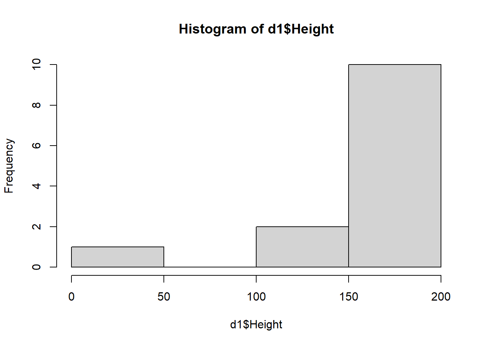

#load needed packages. make sure they are installed.
library(readxl) #for loading Excel files
library(dplyr) #for data processing/cleaning
library(tidyr) #for data processing/cleaning
library(skimr) #for nice visualization of data
library(here) #to set pathsAn example cleaning script with code pulled in
Processing script with code pulled in
This is essentially the same as the other Quarto file, but now the code is not inside this file. Instead, it is pulled in from the R script using the code chunk labels.
Setup
This needs to run to load the R script so we can include the code chunks below.
Note that you can pull in more than one R script if you want.
Load needed packages. Instead of having R commands here, this just pulls in the code from the R script we loaded above and labelled.
Data loading
Note that for functions that come from specific packages (instead of base R), I often specify both package and function like so: package::function() that’s not required one could just call the function specifying the package makes it clearer where the function “lives”, but it adds typing. You can do it either way.
#path to data
#note the use of the here() package and not absolute paths
data_location <- here::here("data","raw_data","exampledata2.xlsx")
#load data.
#note that for functions that come from specific packages (instead of base R)
# I often specify both package and function like so
#package::function() that's not required one could just call the function
#specifying the package makes it clearer where the function "lives",
#but it adds typing. You can do it either way.
rawdata <- readxl::read_excel(data_location)Explore data
Several ways of looking at the data
#take a look at the data
dplyr::glimpse(rawdata)Rows: 14
Columns: 5
$ Height <chr> "180", "175", "sixty", "178", "192", "6", "156", ~
$ Weight <dbl> 80, 70, 60, 76, 90, 55, 90, 110, 54, 7000, NA, 45~
$ Sex <chr> "M", "M", "F", "F", "NA", "F", "M", "M", "F", "M"~
$ `Number of Siblings` <dbl> 1, 2, 0, 1, 1, 2, 4, 3, 2, 3, 2, 2, 0, 2
$ Religion <chr> "Christian", "Christian", "Christian", "Jewish", ~#another way to look at the data
summary(rawdata) Height Weight Sex Number of Siblings
Length:14 Min. : 45.0 Length:14 Min. :0.000
Class :character 1st Qu.: 55.0 Class :character 1st Qu.:1.000
Mode :character Median : 70.0 Mode :character Median :2.000
Mean : 602.7 Mean :1.786
3rd Qu.: 90.0 3rd Qu.:2.000
Max. :7000.0 Max. :4.000
NA's :1
Religion
Length:14
Class :character
Mode :character
#yet another way to get an idea of the data
head(rawdata)# A tibble: 6 x 5
Height Weight Sex `Number of Siblings` Religion
<chr> <dbl> <chr> <dbl> <chr>
1 180 80 M 1 Christian
2 175 70 M 2 Christian
3 sixty 60 F 0 Christian
4 178 76 F 1 Jewish
5 192 90 NA 1 Muslim
6 6 55 F 2 None #this is a nice way to look at data
skimr::skim(rawdata)| Name | rawdata |
| Number of rows | 14 |
| Number of columns | 5 |
| _______________________ | |
| Column type frequency: | |
| character | 3 |
| numeric | 2 |
| ________________________ | |
| Group variables | None |
Variable type: character
| skim_variable | n_missing | complete_rate | min | max | empty | n_unique | whitespace |
|---|---|---|---|---|---|---|---|
| Height | 0 | 1 | 1 | 5 | 0 | 13 | 0 |
| Sex | 0 | 1 | 1 | 2 | 0 | 3 | 0 |
| Religion | 0 | 1 | 4 | 9 | 0 | 4 | 0 |
Variable type: numeric
| skim_variable | n_missing | complete_rate | mean | sd | p0 | p25 | p50 | p75 | p100 | hist |
|---|---|---|---|---|---|---|---|---|---|---|
| Weight | 1 | 0.93 | 602.69 | 1922.25 | 45 | 55 | 70 | 90 | 7000 | ▇▁▁▁▁ |
| Number of Siblings | 0 | 1.00 | 1.79 | 1.12 | 0 | 1 | 2 | 2 | 4 | ▂▃▇▂▁ |
# looks like we have the following data
# height (seems like it's in centimeters)
# weight (seems to be in kilogram)
# SexLooks like we have the following data:
- height (seems like it’s in centimeters)
- weight (seems to be in kilogram)
- Sex
Cleaning
By inspecting the data as done above, we find some problems that need addressing:
First, there is an entry for height which says “sixty” instead of a number. Does that mean it should be a numeric 60? It somehow doesn’t make sense since the weight is 60kg, which can’t happen for a 60cm person (a baby). Since we don’t know how to fix this, we might decide to remove the person. This “sixty” entry also turned all Height entries into characters instead of numeric. That conversion to character also means that our summary function isn’t very meaningful. So let’s fix that first.
# Inspecting the data, we find some problems that need addressing:
# First, there is an entry for height which says "sixty" instead of a number.
# Does that mean it should be a numeric 60? It somehow doesn't make
# sense since the weight is 60kg, which can't happen for a 60cm person (a baby)
# Since we don't know how to fix this, we might decide to remove the person.
# This "sixty" entry also turned all Height entries into characters instead of numeric.
# That conversion to character also means that our summary function isn't very meaningful.
# So let's fix that first.
d1 <- rawdata %>% dplyr::filter( Height != "sixty" ) %>%
dplyr::mutate(Height = as.numeric(Height))
d1# A tibble: 13 x 5
Height Weight Sex `Number of Siblings` Religion
<dbl> <dbl> <chr> <dbl> <chr>
1 180 80 M 1 Christian
2 175 70 M 2 Christian
3 178 76 F 1 Jewish
4 192 90 NA 1 Muslim
5 6 55 F 2 None
6 156 90 M 4 Muslim
7 166 110 M 3 Christian
8 155 54 F 2 Muslim
9 145 7000 M 3 Christian
10 165 NA F 2 Muslim
11 133 45 F 2 Jewish
12 166 55 M 0 Christian
13 154 50 M 2 Jewish # look at partially fixed data again
skimr::skim(d1)| Name | d1 |
| Number of rows | 13 |
| Number of columns | 5 |
| _______________________ | |
| Column type frequency: | |
| character | 2 |
| numeric | 3 |
| ________________________ | |
| Group variables | None |
Variable type: character
| skim_variable | n_missing | complete_rate | min | max | empty | n_unique | whitespace |
|---|---|---|---|---|---|---|---|
| Sex | 0 | 1 | 1 | 2 | 0 | 3 | 0 |
| Religion | 0 | 1 | 4 | 9 | 0 | 4 | 0 |
Variable type: numeric
| skim_variable | n_missing | complete_rate | mean | sd | p0 | p25 | p50 | p75 | p100 | hist |
|---|---|---|---|---|---|---|---|---|---|---|
| Height | 0 | 1.00 | 151.62 | 46.46 | 6 | 154.00 | 165 | 175 | 192 | ▁▁▁▂▇ |
| Weight | 1 | 0.92 | 647.92 | 2000.48 | 45 | 54.75 | 73 | 90 | 7000 | ▇▁▁▁▁ |
| Number of Siblings | 0 | 1.00 | 1.92 | 1.04 | 0 | 1.00 | 2 | 2 | 4 | ▁▃▇▂▁ |
hist(d1$Height)
Now we see that there is one person with a height of 6. That could be a typo, or someone mistakenly entered their height in feet. Since we unfortunately don’t know, we might need to remove this person, which we’ll do here.
# Now we see that there is one person with a height of 6.
# that could be a typo, or someone mistakenly entered their height in feet.
# Since we unfortunately don't know, we might need to remove this person, which we'll do here.
d2 <- d1 %>% dplyr::filter(Height != 6)
#height values seem ok now
skimr::skim(d2)| Name | d2 |
| Number of rows | 12 |
| Number of columns | 5 |
| _______________________ | |
| Column type frequency: | |
| character | 2 |
| numeric | 3 |
| ________________________ | |
| Group variables | None |
Variable type: character
| skim_variable | n_missing | complete_rate | min | max | empty | n_unique | whitespace |
|---|---|---|---|---|---|---|---|
| Sex | 0 | 1 | 1 | 2 | 0 | 3 | 0 |
| Religion | 0 | 1 | 6 | 9 | 0 | 3 | 0 |
Variable type: numeric
| skim_variable | n_missing | complete_rate | mean | sd | p0 | p25 | p50 | p75 | p100 | hist |
|---|---|---|---|---|---|---|---|---|---|---|
| Height | 0 | 1.00 | 163.75 | 16.33 | 133 | 154.75 | 165.5 | 175.75 | 192 | ▂▇▆▆▂ |
| Weight | 1 | 0.92 | 701.82 | 2088.97 | 45 | 54.50 | 76.0 | 90.00 | 7000 | ▇▁▁▁▁ |
| Number of Siblings | 0 | 1.00 | 1.92 | 1.08 | 0 | 1.00 | 2.0 | 2.25 | 4 | ▂▅▇▃▂ |
d2# A tibble: 12 x 5
Height Weight Sex `Number of Siblings` Religion
<dbl> <dbl> <chr> <dbl> <chr>
1 180 80 M 1 Christian
2 175 70 M 2 Christian
3 178 76 F 1 Jewish
4 192 90 NA 1 Muslim
5 156 90 M 4 Muslim
6 166 110 M 3 Christian
7 155 54 F 2 Muslim
8 145 7000 M 3 Christian
9 165 NA F 2 Muslim
10 133 45 F 2 Jewish
11 166 55 M 0 Christian
12 154 50 M 2 Jewish Height values seem ok now.
Now let’s look at the Weight variable. There is a person with weight of 7000, which is impossible, and one person with missing weight. To be able to analyze the data, we’ll remove those individuals as well.
Note that removing anyone who had “faulty” or missing data is one approach. It’s often not the best. Based on your question and your analysis approach, you might want to do cleaning differently (e.g. keep individuals with some missing information).
# now let's look at weight
# there is a person with weight of 7000, which is impossible,
# and one person with missing weight.
# to be able to analyze the data, we'll remove those individuals as well
d3 <- d2 %>% dplyr::filter(Weight != 7000) %>% tidyr::drop_na()
skimr::skim(d3)| Name | d3 |
| Number of rows | 10 |
| Number of columns | 5 |
| _______________________ | |
| Column type frequency: | |
| character | 2 |
| numeric | 3 |
| ________________________ | |
| Group variables | None |
Variable type: character
| skim_variable | n_missing | complete_rate | min | max | empty | n_unique | whitespace |
|---|---|---|---|---|---|---|---|
| Sex | 0 | 1 | 1 | 2 | 0 | 3 | 0 |
| Religion | 0 | 1 | 6 | 9 | 0 | 3 | 0 |
Variable type: numeric
| skim_variable | n_missing | complete_rate | mean | sd | p0 | p25 | p50 | p75 | p100 | hist |
|---|---|---|---|---|---|---|---|---|---|---|
| Height | 0 | 1 | 165.5 | 16.83 | 133 | 155.25 | 166 | 177.25 | 192 | ▂▇▅▇▂ |
| Weight | 0 | 1 | 72.0 | 21.09 | 45 | 54.25 | 73 | 87.50 | 110 | ▇▂▃▃▂ |
| Number of Siblings | 0 | 1 | 1.8 | 1.14 | 0 | 1.00 | 2 | 2.00 | 4 | ▂▆▇▂▂ |
Now checking the Sex variable. Sex should be a categorical/factor variable but is loaded as character. We can fix that with simple base R code to mix things up.
# last problems is that Sex should be a categorical/factor variable
# we can do that with simple base R code to mix things up
d3$Sex <- as.factor(d3$Sex)
skimr::skim(d3)| Name | d3 |
| Number of rows | 10 |
| Number of columns | 5 |
| _______________________ | |
| Column type frequency: | |
| character | 1 |
| factor | 1 |
| numeric | 3 |
| ________________________ | |
| Group variables | None |
Variable type: character
| skim_variable | n_missing | complete_rate | min | max | empty | n_unique | whitespace |
|---|---|---|---|---|---|---|---|
| Religion | 0 | 1 | 6 | 9 | 0 | 3 | 0 |
Variable type: factor
| skim_variable | n_missing | complete_rate | ordered | n_unique | top_counts |
|---|---|---|---|---|---|
| Sex | 0 | 1 | FALSE | 3 | M: 6, F: 3, NA: 1 |
Variable type: numeric
| skim_variable | n_missing | complete_rate | mean | sd | p0 | p25 | p50 | p75 | p100 | hist |
|---|---|---|---|---|---|---|---|---|---|---|
| Height | 0 | 1 | 165.5 | 16.83 | 133 | 155.25 | 166 | 177.25 | 192 | ▂▇▅▇▂ |
| Weight | 0 | 1 | 72.0 | 21.09 | 45 | 54.25 | 73 | 87.50 | 110 | ▇▂▃▃▂ |
| Number of Siblings | 0 | 1 | 1.8 | 1.14 | 0 | 1.00 | 2 | 2.00 | 4 | ▂▆▇▂▂ |
d3# A tibble: 10 x 5
Height Weight Sex `Number of Siblings` Religion
<dbl> <dbl> <fct> <dbl> <chr>
1 180 80 M 1 Christian
2 175 70 M 2 Christian
3 178 76 F 1 Jewish
4 192 90 NA 1 Muslim
5 156 90 M 4 Muslim
6 166 110 M 3 Christian
7 155 54 F 2 Muslim
8 133 45 F 2 Jewish
9 166 55 M 0 Christian
10 154 50 M 2 Jewish Now we see that there is another NA, but it’s not NA from R, instead it was loaded as character and is now considered as a category. Well proceed here by removing that individual with that NA entry. Since this keeps an empty category for Sex, I’m also using droplevels() to get rid of it.
#now we see that there is another NA, but it's not "NA" from R
#instead it was loaded as character and is now considered as a category
#well proceed here by removing that individual
#since this keeps an empty category for Sex, I'm also using droplevels() to get rid of it
d4 <- d3 %>% dplyr::filter(Sex != "NA") %>% droplevels()
skimr::skim(d4)| Name | d4 |
| Number of rows | 9 |
| Number of columns | 5 |
| _______________________ | |
| Column type frequency: | |
| character | 1 |
| factor | 1 |
| numeric | 3 |
| ________________________ | |
| Group variables | None |
Variable type: character
| skim_variable | n_missing | complete_rate | min | max | empty | n_unique | whitespace |
|---|---|---|---|---|---|---|---|
| Religion | 0 | 1 | 6 | 9 | 0 | 3 | 0 |
Variable type: factor
| skim_variable | n_missing | complete_rate | ordered | n_unique | top_counts |
|---|---|---|---|---|---|
| Sex | 0 | 1 | FALSE | 2 | M: 6, F: 3 |
Variable type: numeric
| skim_variable | n_missing | complete_rate | mean | sd | p0 | p25 | p50 | p75 | p100 | hist |
|---|---|---|---|---|---|---|---|---|---|---|
| Height | 0 | 1 | 162.56 | 14.87 | 133 | 155 | 166 | 175 | 180 | ▂▁▇▅▇ |
| Weight | 0 | 1 | 70.00 | 21.34 | 45 | 54 | 70 | 80 | 110 | ▇▂▃▂▂ |
| Number of Siblings | 0 | 1 | 1.89 | 1.17 | 0 | 1 | 2 | 2 | 4 | ▂▃▇▂▂ |
d4# A tibble: 9 x 5
Height Weight Sex `Number of Siblings` Religion
<dbl> <dbl> <fct> <dbl> <chr>
1 180 80 M 1 Christian
2 175 70 M 2 Christian
3 178 76 F 1 Jewish
4 156 90 M 4 Muslim
5 166 110 M 3 Christian
6 155 54 F 2 Muslim
7 133 45 F 2 Jewish
8 166 55 M 0 Christian
9 154 50 M 2 Jewish Lets change Religion variable to a categorical/factor variable.
# Lets change Religion variable to a categorical/factor variable
d4$Religion <- as.factor(d4$Religion)
skimr::skim(d4)| Name | d4 |
| Number of rows | 9 |
| Number of columns | 5 |
| _______________________ | |
| Column type frequency: | |
| factor | 2 |
| numeric | 3 |
| ________________________ | |
| Group variables | None |
Variable type: factor
| skim_variable | n_missing | complete_rate | ordered | n_unique | top_counts |
|---|---|---|---|---|---|
| Sex | 0 | 1 | FALSE | 2 | M: 6, F: 3 |
| Religion | 0 | 1 | FALSE | 3 | Chr: 4, Jew: 3, Mus: 2 |
Variable type: numeric
| skim_variable | n_missing | complete_rate | mean | sd | p0 | p25 | p50 | p75 | p100 | hist |
|---|---|---|---|---|---|---|---|---|---|---|
| Height | 0 | 1 | 162.56 | 14.87 | 133 | 155 | 166 | 175 | 180 | ▂▁▇▅▇ |
| Weight | 0 | 1 | 70.00 | 21.34 | 45 | 54 | 70 | 80 | 110 | ▇▂▃▂▂ |
| Number of Siblings | 0 | 1 | 1.89 | 1.17 | 0 | 1 | 2 | 2 | 4 | ▂▃▇▂▂ |
d4# A tibble: 9 x 5
Height Weight Sex `Number of Siblings` Religion
<dbl> <dbl> <fct> <dbl> <fct>
1 180 80 M 1 Christian
2 175 70 M 2 Christian
3 178 76 F 1 Jewish
4 156 90 M 4 Muslim
5 166 110 M 3 Christian
6 155 54 F 2 Muslim
7 133 45 F 2 Jewish
8 166 55 M 0 Christian
9 154 50 M 2 Jewish # In rawdata, we had an entry "None" in Religion which would not have given us specific information about a particular religion
# So we would have wanted to delete that entry/individual from the data set
# but that individual had height 6 which could have been a typo, or someone mistakenly entered their height in feet
# So that individual was already deleted in the step cleandata2.In rawdata, we had an entry “None” in Religion which would not have given us specific information about a particular religion. So we would have wanted to delete that entry/individual from the data set but that individual had height 6 which could have been a typo, or someone mistakenly entered their height in feet. So, that individual was already deleted in the step cleandata2.
Save data
All done, data is clean now. Time to save. Let’s assign at the end to some final variable, this makes it easier to add further cleaning steps above.
Finally, we save the clean data as RDS file. I suggest you save your processed and cleaned data as RDS or RDA/Rdata files. This preserves coding like factors, characters, numeric, etc. If you save as CSV, that information would get lost. However, CSV is better for sharing with others since it’s plain text. If you do CSV, you might want to write down somewhere what each variable is.
See here for some suggestions on how to store your processed data: http://www.sthda.com/english/wiki/saving-data-into-r-data-format-rds-and-rdata
# all done, data is clean now.
# Let's assign at the end to some final variable
# makes it easier to add steps above
processeddata <- d4
# location to save file
save_data_location <- here::here("data","processed_data","processeddata.rds")
saveRDS(processeddata, file = save_data_location)